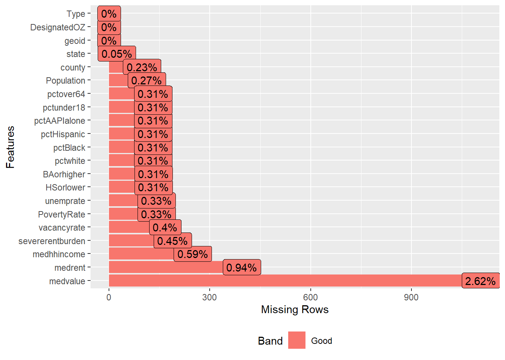
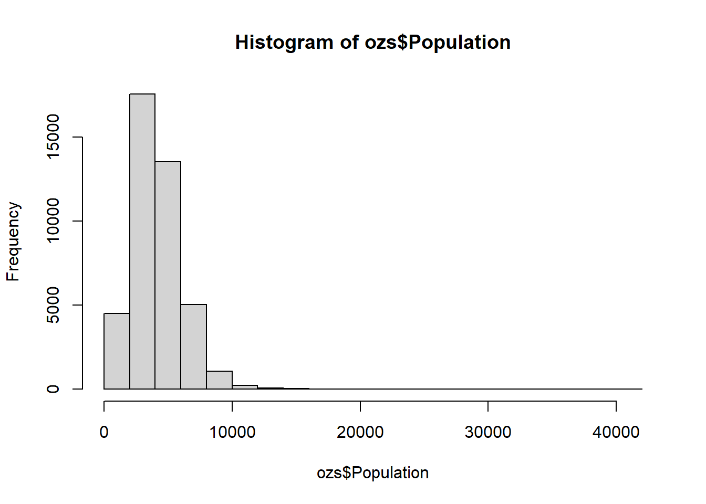
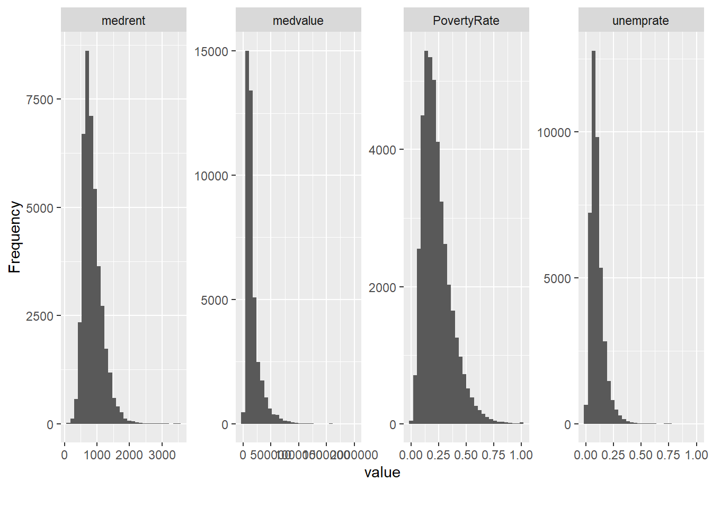
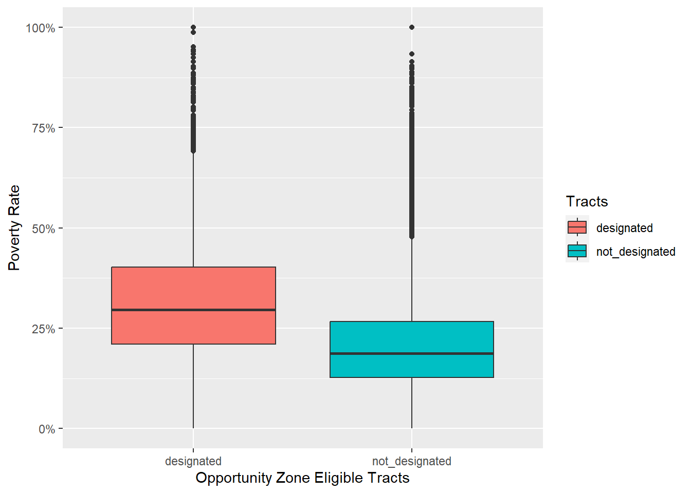
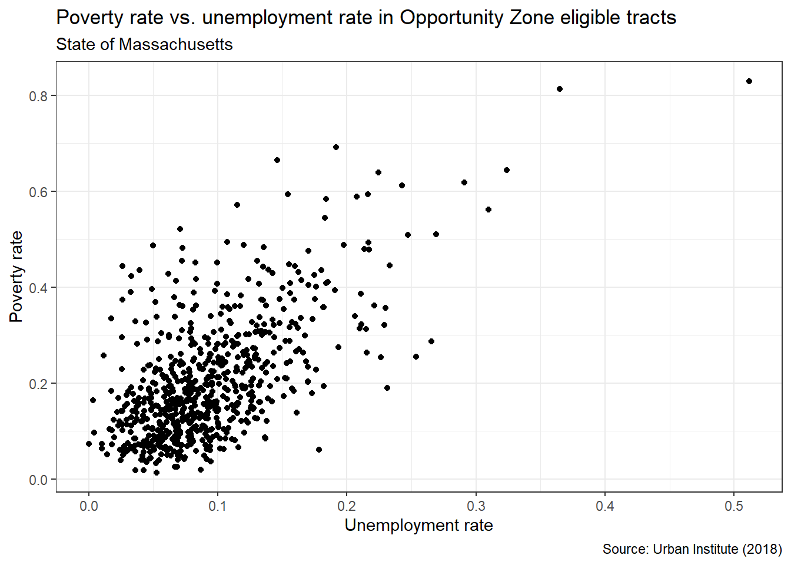
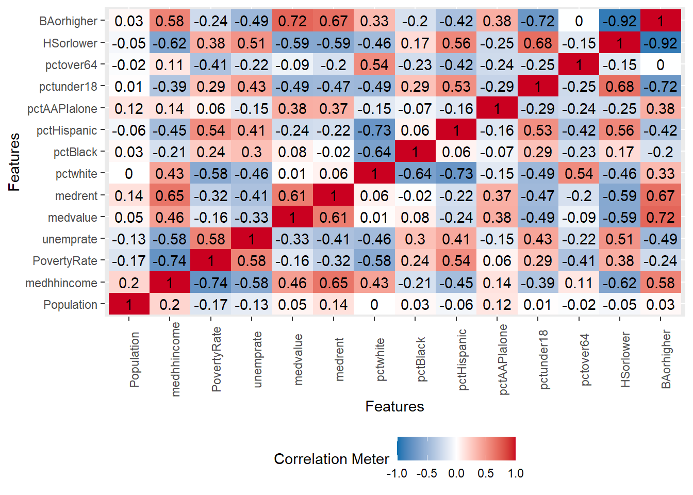
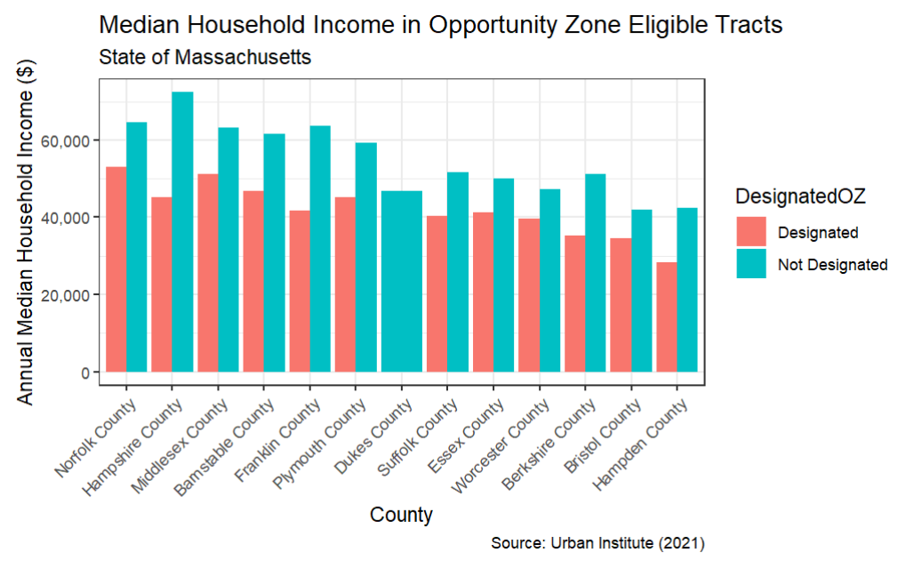

ozs <- read_xlsx("../data/urbaninstitute_tractlevelozanalysis_update01142021.xlsx")Exploratory Data Analysis with 
11.S954 Applied Data Science for Cities
Overview
This week’s Lab Exercise focuses on the dplyr package and the ggplot2 package. It also begins to engage with data visualization best practices by demonstrating how to create and interpret a variety of graphics.
Exploratory data analysis (EDA) is a phase of a larger data science workflow—or perhaps a philosophy—that emphasizes getting to know the data before rushing to analyze it using this more rigid approaches like hypothesis tests. EDA relies heavily on the creation and interpretation of graphics in order to build familiarity and gain fundamental insights that can inform more sophisticated analyses later on. There are several overarching goals of exploratory data analysis, including:
- To determine if there are any problems with your dataset.
- To determine whether the question you are asking can be answered by the data that you have.
- To begin formulating an answer to your question.
Our study topic today
In the 2017 Tax Cuts and Jobs Act, a new federal incentive was introduced to encourage investment in low-income and undercapitalized communities. States were given the chance to select specific census tracts as Opportunity Zones, where investors could enjoy tax benefits for their eligible investments. Although, there’s been a lot of curiosity among practitioners and researchers regarding how effective the program is and whether the designations made by governors were successful.
If you are interested in the locations of these Opportunity Zones, you can check out this map. The pink geometries reflected on the map are census tracts, which we often use as a proxy for neighborhoods, especially in urban areas. Just find a familiar place, and see which areas have been designated as Opportunity Zones.
Download data and load packages
Now please navigate to Urban Institute’s website about Opportunity Zones, find the link “Download tract-level data on all Opportunity Zones”, and download this dataset to your “data” folder within your Lab 2 project folder. Open it in Excel and take a quick look. This data lists tracts nationwide that were designated an Opportunity Zones, along with essential Census demographic data that describe these tracts.
To stay organized, you should load packages at the beginning of your script or markdown document. These are the three packages we are going to use today.
Read and examine our data
Use read_xlsx from the readxl package will read Microsoft Excel files into data tables.
Now look at the “Environment” panel on the top-right of your R interface, you should see the new variable ozs. You can also see this variable 27 variables (columns) and 42178 observations (rows). Click it to preview the content of ozs. Alternatively, you could preview it by typing View(ozs) in your console.
Here are the column definitions:
- geoid: combined state, county, tract FIPS (Federal Information Processing Standards) code this is a unique identification number for each census tract. If it is the first time you heard of tracts, they are sub-areas of a county defined for the purpose of taking a census.
- state: the name of the state
- county: the county name
- Designated: 1 if the tract was designated an Opportunity Zone
- Type: category for OZ designation
- Population: total population
- PovertyRate: poverty rate
- medhhincome: median household income
- medrent: median gross rent (per month)
- vacancyrate: residential vacancy rate
- unemprate: unemployment rate
- pctwhite: White non-Hispanic population (%)
- pctblack: Black non-Hispanic population (%)
- pctHispanic: Hispanic and Latino population (%)
- Metro: tract in a metropolitan area
Your practice
There are commonly used commands in base R that provide an initial check of a dataset, for example:
dim(),ncol(),nrow()colnames()glimpse()head(),tail()str()summary()
Insert a new code chunk and experiment with a few of these functions. What each function accomplishes?
Beside examining the basic data structures, There are a few other things I’ll encourage you to inspect during the initial check process:
Completeness
By viewing the first several rows of the dataset, we can already spot some N/A values. For example, there is a field named Designated which is 1 when an eligible tract was designated as an opportunity zone, and N/A where the tract was not designated. (In fact, for our analysis, it’s better to recode these NAs to equal 0 instead, which we will do in a bit).
There are N/As in many of the statistics fields as well, which indicate unavailable information for that specific data point. (If you never see “N/A” in the first 20 some rows, it will be too soon).
How many missing values are there and would that be a hurdle for my analysis? It will be great to have a sense of completeness in terms of what proportion of a field actually holds data. DataExplorer is a handy tool to quickly understand datasets.
DataExplorer::plot_missing(ozs)
Unique values of categorical variables
The unique() base R function extracts unique elements in a large set of values. We can use it to specific columns to see what entries we have here. It also helps us to see if there is anything we need to clean up, such as typos or incorrect names, before proceeding to more analysis. For this dataset, we can take a look at the state column. What we have here in this column are all U.S. territories as well as a few NA values.
unique(ozs$state) [1] "Alabama" "Alaska"
[3] "Arizona" "Arkansas"
[5] "California" "Colorado"
[7] "Connecticut" "Delaware"
[9] "District of Columbia" "Florida"
[11] "Georgia" "Hawaii"
[13] "Idaho" "Illinois"
[15] "Indiana" "Iowa"
[17] "Kansas" "Kentucky"
[19] "Louisiana" "Maine"
[21] "Maryland" "Massachusetts"
[23] "Michigan" "Minnesota"
[25] "Mississippi" "Missouri"
[27] "Montana" "Nebraska"
[29] "Nevada" "New Hampshire"
[31] "New Jersey" "New Mexico"
[33] "New York" "North Carolina"
[35] "North Dakota" "Ohio"
[37] "Oklahoma" "Oregon"
[39] "Pennsylvania" "Rhode Island"
[41] "South Carolina" "South Dakota"
[43] "Tennessee" "Texas"
[45] "Utah" "Vermont"
[47] "Virginia" "Washington"
[49] "West Virginia" "Wisconsin"
[51] "Wyoming" "American Samoa"
[53] NA "Guam"
[55] "Northern Mariana Islands" "Puerto Rico"
[57] "Virgin Islands" Range of numerical variables
For numeric columns, it’ll be helpful to visually inspect whether the values fall within the expected range, how the values are distributed, and whether there are any wacky numbers like -999 (often used in SPSS files to indicate missing data), etc. A quick histogram helps us to see the value distribution. Additionally, it visualizes patterns by dividing the data set into groups (or bins) of equal length, then communicating how many or what proportion of the observations fall within each of those “bins”.
# We can use the base R function hist() to check one variable:
hist(ozs$Population)
# Or use the DataExplorer package to check multiple variables at the same time
DataExplorer::plot_histogram(ozs[,c(10:13)])
Your practice
Check the DesignatedOZ column - what values does it contain?
Data Cleanning
The Urban Institute has coded the designated variable as either taking a value of 1 when designated or NA when not. We can recode the NA values in DesignatedOZ for legibility. In the following code, we uses the dplyr function: mutate to modify DesignatedOZ in place. We replaced the numbers with texts since the NA and 1 here have no mathematical meaning.
ozs <- ozs |> mutate(DesignatedOZ =
ifelse(is.na(DesignatedOZ), "Not Designated", "Designated"))There are a few columns (such as SE_Flag) that we won’t need for this analysis. We can use select in dplyr function to select a subset of columns to work on. select allows you to retain specified columns. If there is a minus sign in front, that means to drop these specified columns.
ozs <- ozs |> select(-c(dec_score, SE_Flag, Metro, Micro, NoCBSAType))Exploring Variation Within Variables
The code chunk below creates a boxplot to contrast the distribution of poverty rates between designated opportunity zones and undesignated zones. A boxplot is a very commonly used EDA tool that allows us to quickly visualize the distribution of a single variable or column of data if we are working with a data frame. Note that we are using what should now be familiar conventions to construct the graphic beginning with the ggplot function, then adding more features with the + operator and other functions listed in the package reference.
ggplot(data = ozs): This is the main plotting function.ozsis your dataset we use.geom_boxplot(): Recall that geometric layers are called geoms. It tells R what kind of geometry you want to use visualize the data.aes(x = DesignatedOZ, y = PovertyRate): Theaes()function is where you tellggplotwhich variable goes on the x axis followed by which variable goes on the y axis.- The
labsfunction sets the labels. Because the legend is showing the fill component of the plot, we use the fill argument in thelabsfunction to set the name of the legend itself. - We used a new function
scale_y_continuousto specify y axis properties. Here we are making sure the poverty rate are labeled as percentages. If you remove this line, they will by default show as decimal numbers.
ggplot(data = ozs) +
geom_boxplot(aes(x = DesignatedOZ, y = PovertyRate, fill = DesignatedOZ)) +
scale_y_continuous(labels = scales::percent) +
labs(title = "", x = "Opportunity Zone Eligible Tracts", y = "Poverty Rate", fill = "Tracts")
We can create cross-tabulations as a complement to visual EDA tools like boxplots and histograms. An easy way to do this is to use the existing function count in the dplyr package. A brief demonstration is given in the code chunk below.
ozs |>
count(state, DesignatedOZ)# A tibble: 108 × 3
state DesignatedOZ n
<chr> <chr> <int>
1 Alabama Designated 158
2 Alabama Not Designated 677
3 Alaska Designated 25
4 Alaska Not Designated 43
5 American Samoa Designated 16
6 Arizona Designated 168
7 Arizona Not Designated 702
8 Arkansas Designated 85
9 Arkansas Not Designated 435
10 California Designated 879
# ℹ 98 more rowsExercise 1
Insert a new code chunk and a markdown section below this one to “catch” your responses. Please review what we have learned and proceed with the questions below.
- Which of the variables (columns) are continuous and which are categorical (e.g., factor)?
- Hint: Recall that a variable is categorical if it can only take one of a small set of values and continuous if it can take any of an infinite set of ordered values.
- Which function or approach did you use to answer this question?
- How is the median household income distributed across the places?
- Hint: Should we expect to see a more flat/homogeneous distribution, or a more skewed distribution in terms of fewer households belonging to the higher-income group?
- Which function or approach did you use to answer this question?
- Create a graphic that contrasts the distribution of the unemployment rate in designated zones and in undesignated zones in this dataset.
- Interpret the graphic(s) you have created and include 2-3 sentences of text explanation (i.e., in an RMarkdown section)
Exploring Variation Between Variables
We are often interested in bivariate relationships or how two variables relate to one another. Scatterplots are often used to visualize the association between two continuous variables. They can reveal much about the nature of the relationship between two variables.
Let’s use a subset of our data - tracts in Massachusetts - to perform this part of analysis. You can definitely use the entire dataset, it’s just there will be over 40,000 points showing on the graph.
ozs_ma <- ozs |> filter(state == "Massachusetts") Now we begin by creating a scatterplot of poverty rate and unemployment rate. Note that we used theme_bw, which is a theme template for a cleaner look.
ggplot(ozs_ma) +
geom_point(aes(unemprate, PovertyRate)) +
labs(title = "Poverty rate vs. unemployment rate in Opportunity Zone eligible tracts",
subtitle = "State of Massachusetts",
x = "Unemployment rate",
y = "Poverty rate",
caption = "Source: Urban Institute (2018)") +
theme_bw()
It is generally easy to recognize patterns in a graphical display. As we move from left to right along the x-axis (i.e., as unthe employment rate creases), the amount of poverty rate reported also increases.
As a complement to the scatterplot, we can use the base R cor function to calculate the (Pearson by default, see the documentation for other options) correlation between any continuous variables in the dataset. The DataExplorer package is also designed to help us quickly understand patterns in our data. We demonstrate both in the following code.
If you are unfamiliar with reading a correlation matrix, the values range between -1 and 1 where:
- -1 indicates a perfectly negative linear correlation between two variables
- 0 indicates no linear correlation between two variables
- 1 indicates a perfectly positive linear correlation between two variables
ozs_ma |> select(Population:medrent, pctwhite:BAorhigher) |>
na.omit() |>
stats::cor(use = "complete.obs") Population medhhincome PovertyRate unemprate medvalue
Population 1.0000000000 0.1971310 -0.17219731 -0.1255690 0.05060663
medhhincome 0.1971310072 1.0000000 -0.74280330 -0.5823090 0.45672297
PovertyRate -0.1721973144 -0.7428033 1.00000000 0.5848120 -0.15673933
unemprate -0.1255690086 -0.5823090 0.58481204 1.0000000 -0.32627434
medvalue 0.0506066324 0.4567230 -0.15673933 -0.3262743 1.00000000
medrent 0.1434824928 0.6494977 -0.32058250 -0.4139894 0.60946764
pctwhite 0.0007742062 0.4334837 -0.58166274 -0.4583927 0.01479243
pctBlack 0.0305972149 -0.2081070 0.24067220 0.3002354 0.07662521
pctHispanic -0.0610330071 -0.4470198 0.53817440 0.4107687 -0.24108925
pctAAPIalone 0.1179507879 0.1360442 0.05777953 -0.1516819 0.38403023
pctunder18 0.0075944281 -0.3886837 0.28931873 0.4263952 -0.48597184
pctover64 -0.0200934534 0.1116477 -0.40837729 -0.2236285 -0.08790793
HSorlower -0.0510755304 -0.6192728 0.38428550 0.5080771 -0.59138685
BAorhigher 0.0317046620 0.5837037 -0.24483958 -0.4850706 0.71630822
medrent pctwhite pctBlack pctHispanic pctAAPIalone
Population 0.14348249 0.0007742062 0.03059721 -0.06103301 0.11795079
medhhincome 0.64949767 0.4334836763 -0.20810703 -0.44701977 0.13604425
PovertyRate -0.32058250 -0.5816627414 0.24067220 0.53817440 0.05777953
unemprate -0.41398938 -0.4583927470 0.30023542 0.41076874 -0.15168191
medvalue 0.60946764 0.0147924343 0.07662521 -0.24108925 0.38403023
medrent 1.00000000 0.0592656294 -0.01942961 -0.21839927 0.37309846
pctwhite 0.05926563 1.0000000000 -0.64391155 -0.72603098 -0.14608318
pctBlack -0.01942961 -0.6439115534 1.00000000 0.05756055 -0.07150764
pctHispanic -0.21839927 -0.7260309801 0.05756055 1.00000000 -0.16352352
pctAAPIalone 0.37309846 -0.1460831806 -0.07150764 -0.16352352 1.00000000
pctunder18 -0.47107334 -0.4866220916 0.28987714 0.52756318 -0.29072583
pctover64 -0.20439363 0.5440272257 -0.22702697 -0.42430798 -0.23991183
HSorlower -0.59290214 -0.4609030805 0.16871183 0.56358387 -0.25180077
BAorhigher 0.67357448 0.3278345358 -0.19790460 -0.42390213 0.38422347
pctunder18 pctover64 HSorlower BAorhigher
Population 0.007594428 -0.020093453 -0.05107553 0.031704662
medhhincome -0.388683691 0.111647722 -0.61927277 0.583703714
PovertyRate 0.289318732 -0.408377288 0.38428550 -0.244839584
unemprate 0.426395199 -0.223628488 0.50807715 -0.485070585
medvalue -0.485971837 -0.087907931 -0.59138685 0.716308223
medrent -0.471073339 -0.204393629 -0.59290214 0.673574479
pctwhite -0.486622092 0.544027226 -0.46090308 0.327834536
pctBlack 0.289877141 -0.227026967 0.16871183 -0.197904602
pctHispanic 0.527563183 -0.424307981 0.56358387 -0.423902133
pctAAPIalone -0.290725828 -0.239911831 -0.25180077 0.384223470
pctunder18 1.000000000 -0.248306018 0.68045309 -0.718007353
pctover64 -0.248306018 1.000000000 -0.14789121 -0.003268322
HSorlower 0.680453091 -0.147891209 1.00000000 -0.923184800
BAorhigher -0.718007353 -0.003268322 -0.92318480 1.000000000ozs_ma |> select(Population:medrent, pctwhite:BAorhigher) |>
na.omit() |>
DataExplorer::plot_correlation()
An additional note to the code above is that we selected several continuous variables that we want to inspect, and removed NA values so that the correlation values can be correctly calculated.
What can we do if we are interested in statistical associations between categorical variables? The typical approach is to summarise the values under each category and visualize them using barcharts.
In the following code, you can see our familiar group_by + summarise process used to calculate the average median house income by county in Massachusetts. This summarized table is then piped to ggplot() for visualization.
ozs_ma |>
group_by(county, DesignatedOZ) |>
summarise(
Tracts = n(),
Income = mean(medhhincome, na.rm=TRUE)) |>
ggplot() +
geom_col(aes(x = county, y = Income, fill = DesignatedOZ),
position = "dodge") 
Exercise 2
Take a few minutes to read this bar chart below:

How can we modify our code above to replicate the bar chart in this image? You’ll notice that you can achieve most of the features by tweaking our previous examples, plus a little bit more exploration. In a new code chunk, please copy and paste our last bar chart code, and try your best to address the following questions.
- Please add the title, subtitle, x- and y-axis labels, and the data source annotation to your bar chart.
- The background looks much cleaner. Please choose a theme template for your bar chart.
- The x-axis labels are titled to 45 degrees. How can I achieve this? Hint.
- The labels on the y-axis are formatted in thousands with commas. This can be achieved by modifying the function
scale_y_continuous(labels = scales::percent)we have seen before. Hint. - Lastly, the counties are not arranged alphabetically, but rather by the income values mapped to the y-axis, starting from large to small. How can I achieve this? Hint.
Combinations of basic graphs to create composite views
Boxplot and violin plots
The compilation of boxplot and violin plot can be effective ways to visualize key statistics and the number of observations throughout the range. There are a few new arguments in the following code for adjusting the aesthetics.
trim = FALSE: If TRUE (default), trim the tails of the violins to the range of the data. If FALSE, don’t trim the tails.
alpha = 0.5: the transparency of the plotting area.
coord_flip(): whether the y axis is displayed horizonally or vertically.
legend.position = "none": the position of legends (“none”, “left”, “right”, “bottom”, “top”, or two-element numeric vector).
You can try to remove them or change their values to see how they work.
ggplot(ozs_ma) +
geom_violin(aes(x = DesignatedOZ, y = medhhincome, fill = DesignatedOZ), trim = FALSE, alpha = 0.5) +
geom_boxplot(aes(x = DesignatedOZ, y = medhhincome), colour = "black", width = .15, alpha = 0.8) +
labs(
x = "Designated",
y = "Median Household Income",
title = "Distribution of Median Household Income"
) +
coord_flip() +
theme(legend.position = "none")
Scatterplot with marginal histograms
This requires a new package ggExtra. But the other syntax should be familiar now.
p <- ggplot(ozs_ma, aes(pctBlack, PovertyRate)) +
geom_point(aes(color = DesignatedOZ)) +
theme_bw()
ggExtra::ggMarginal(p, type = "histogram", groupFill = TRUE)Work Products
Please submit a .qmd file and a knitted HTML file that shows your work and responses for each of the two Exercises included in this lab.
Is there a distinguishable difference in economic conditions between designated and not-designated census tracts? Please comment on the graphics we have created, and discuss what you have found so far. Talk about any specific aspects you would like to further investigate on this question.
Also, briefly comment on your experience with R during this lab exercise. Please upload your report to Canvas by the end of day, Tuesday, Nov 7.